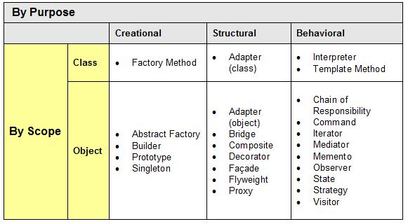

Behavioural Design Patterns
Kenner Kliemann
@gnomexJann Claude Mousquer
@janncmFaculdades Anglo-Americano (FAA)
Curso de Ciencia da Computação
Foz do Iguaçu, PR - Brasil
GoF
é uma abreviação para ”Gang of Four” e refere-se aos quatro escritores do livro ”Design Patterns: Elements of Reusable Object-Oriented Software”.

GoF definem os patterns por dois critérios: propósito e escopo
Chain of responsibility
Evitar o acoplamento do emissor (sender) de um pedido para o seu receptor (receiver), dando mais de um objeto a chance de lidar com o pedido.
Indicado para
- Mais de um objeto pode lidar com uma requisição e o manipulador não é conhecido. O manipulador deve ser determinado automaticamente;
- Emissão de um pedido a um dos vários objetos, sem especificar o receptor de forma explicita;
- O conjunto de objetos que podem lidar com um pedido deve ser especificado dinamicamente.
Command
É possível encapsular uma requisição como um objeto, permitindo que clientes parametrizem diferentes requisições, enfileirem ou façam o registro de requisições e suportem operações que podem ser desfeitas.
Indicado para
- Parametrizar objetos para uma ação a ser tomada;
- Especificar, enfileirar e executar solicitações em tempos diferentes. Um objeto de comando pode ter uma vida independente da solicitação original;
- Suporte a desfazer. O Command pode armazenar as operações de execução, armazenando seus estados e possibilitando desfazer os mesmos;
- Suporte a mudanças de registro, para que possam ser reaplicadas em caso de uma falha do sistema;
- Estruturar um sistema em torno de operações de alto nível construídas sobre operações primitivas. Tal estrutura é comum em sistemas de informação que suportam transações. A transação encapsula um conjunto de alterações aos dados.
Interpret
Dada uma linguagem, define uma representação para sua gramática juntamente com um interpretador que usa a representação para interpretar sentenças na língua.
Se um determinado tipo de problema ocorre com frequência suficiente, então ele pode ser útil para expressar instâncias do problema como sentenças em uma linguagem formal.
Indicado para
- Unicamente para interpretação de linguagens. Como, por exemplo, expressões regulares.
Iterator
É fornecer uma maneira de acessar sequencialmente os elementos de um objeto agregado sem expor sua representação subjacente.
Indicado para
- Acessar o conteúdo de objeto agregados sem expor sua representação interna;
- Suporte a mais de uma maneira de percorrer a coleção;
- Prover interface única para percorrer estruturas agregadas diferentes.
Mediator
Um Mediator define um objeto que encapsula como um grupo de objetos interage. Promove o desacoplamento, mantendo referências explícitas entre os objetos e permite variar suas interações de forma independente.
A ideia do padrão Mediator é semelhante à ideia de central telefônica. Eliminar conexões excessivas entre elementos por meio da introdução de um intermediário único
Indicado para
- Um conjunto de objetos se comunica de maneiras bem definidas, mas complexas. As interdependências resultantes são não estruturadas e de difícil compreensão;
- Reutilização de um objeto é difícil porque ele se refere e se comunica com muitos outros objetos;
- Um comportamento que é distribuído entre várias classes deve ser personalizável sem criar diversas subclasses.
Memento
Sem violar o encapsulamento, captura e externaliza o estado interno de um objeto para que o objeto possa ser restaurado mais tarde.
Indicado para
- Para o armazenamento de estados a serem restaurados de um objeto, como por exemplo, um banco de dados;
- Para a captação de estados de objetos que são encobertos por encapsulamento.
Observer
Define uma dependência um-para-muitos entre objetos de modo que quando um objeto muda de estado, todos os seus dependentes são notificados e atualizados automaticamente.
A ideia fundamental do padrão Observer é atribuir aos objetos que tem seus estados alterados a tarefa de notificar os objetos interessados nessas mudanças.
Indicado para
- Quando uma abstração possui dois aspectos, um dependente do outro. Encapsular estes aspectos em objetos diferentes permite que você os modifique e reutilize de forma independente;
- Quando uma mudança em um objeto requer a mudança em outros e você não sabe quantos e quais objetos precisam ser modificados. Ou seja, não se deseja um alto acoplamento entre estes objetos.
State
Permitir que um objeto altere o seu comportamento como consequência de uma mudança no seu estado interno.
Indicado para
- Quando o comportamento do objeto depende do seu estado e este comportamento deve ser modificado em run-time;
- Quando os métodos possuem sentenças condicionais grandes e com várias opções. O padrão State coloca cada ramo da sentença condicional em uma classe separada.
Strategy
Definir uma família de algoritmos, encapsular cada um e torná-los intercambiáveis. Estratégia permite que o algoritmo varie independentemente dos clientes que o utilizam.
Indicado para
- Quando muitas classes relacionadas diferem somente no seu comportamento;
- Quando é necessário utilizar diferentes variações de um algoritmo;
- Quando um algoritmo utiliza dados que não devem estar expostos aos clientes;
- Quando uma classe define múltiplos comportamentos através de sentenças condicionais em seus métodos.
Template Method
Definir o esqueleto de um algoritmo em uma operação, adiando alguns passos para subclasses. Template Method permite que subclasses redefinam determinadas etapas de um algoritmo sem alterar a estrutura do algoritmo.
A ideia fundamental desse padrão é definir a ordem de execução dos passos que resolvem um determinado problema e permitir que cada passo possa ser implementado de maneiras diferentes.
Indicado para
- Implementação única das partes invariantes de um algoritmo e deixar que subclasses implementem o comportamento que varia;
- Quando um comportamento comum entre subclasses deve ser fatorado e localizado em uma classe comum, com o objetivo de evitar repetição de código;
- Para controlar as extensões realizadas pelas subclasses. O Template Method pode definir operações hook em pontos específicos e, portanto, permitindo variações somente nestes locais.
Visitor
Representar uma operação a ser realizada sobre os elementos de uma estrutura de objeto. Visitor permite que você defina uma nova operação sem mudar as classes dos elementos sobre os quais opera.
Permite atualizações específicas em uma coleção de objetos de acordo com o tipo particular de cada objeto atualizado.
Indicado para
- Quando um agregado contém objetos de diversas classes (com diferentes interfaces) e deseja-se realizar operações nestes objetos que dependem das suas classes concretas;
- Quando muitas operações distintas e não relacionadas precisam ser aplicadas a um agregado e não se deseja poluir as classes dos objetos do agregado com tais operações;
- Quando as classes que definem os objetos do agregado raramente mudam, porém definem-se novas operações com certa frequência.
Conclusão
Padrões de projeto são otimizados, sendo as soluções reutilizáveis para os problemas de programação que nos deparamos todos os dias. Um padrão de design não é uma classe ou uma biblioteca que podemos simplesmente plugar em nosso software; é muito mais do que isso. É um molde que tem de ser aplicada na situação correta. Também não é específico de linguagem. Um padrão de design bom deve ser implementável na maioria (se não em todas) as linguagens, dependendo de seus recursos. Ainda, qualquer padrão de design pode ser uma faca de dois gumes, pois se implementado no lugar errado pode ser desastrosa e criar muitos problemas. No entanto, implementado no lugar certo, na hora certa, ele pode ser a solução.